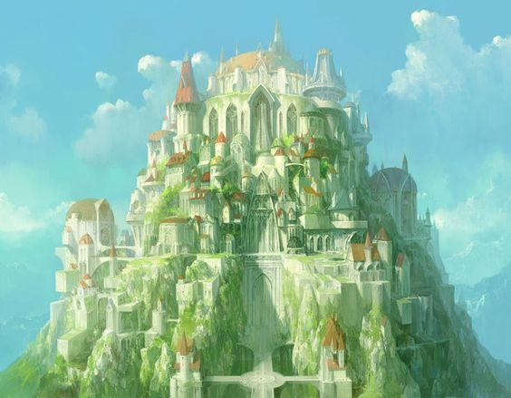

ASGARD
Ubicación de Asgard

Asgard es un reino construido por Odín junto con sus hermanos Vili y Ve, está rodeado por una gran muralla y
se encuentra en la cima del árbol Yggdrasil. Según la mitología nórdica este reino se conecta directamente
con los demás reinos gracias al Bifrost, el cual es el camino que compone al arco iris. Para impedir que las
criaturas de otros reinos lleguen a Asgard, el dios Heimdall lo protege y vigila desde la entrada del
Bifrost a los 9 reinos.
En el centro de Asgard se encuentra el gran palacio de Odín en donde se encuentra el edificio más grande de
los reinos.

Estructuras de Asgard
El palacio de Odín es una obra única, ya que es uno de los pocos edificios que construyeron los dioses con
los restos del gigante Ymir. Este lugar con el paso del tiempo tuvo una gran cantidad de mejoras debido a la
participación de enanos y gigantes. En la parte central del palacio se encuentra el Valhala, en donde además
se ubica el trono de Odín en donde observa a los guerreros caídos en batallas eternas y conoce con el apoyo
de sus cuervos los eventos que suceden en los 9 reinos.
Cerca al muro de Asgard se encuentra Fólkvangr, el palacio de Freyja, en donde los espíritus honorables,
reciben eternamente días de paz junto a la naturaleza.
En la parte boscosa del palacio de Odín se ubica el hogar de Idunn en donde solo los dioses reciben sus
manzanas de la eterna juventud.
Thor junto con los hijos de Odín y otros dios de gran relevancias como Tyr, dios de la guerra, viven en los
pisos superiores de las estructuras de los palacios y alrededor del templo en donde se ubica el trono de
Odín se encuentran una gran cantidad de dioses Vanir y algunas otras criaturas que se han ganado las
confianza de Odín, en este lugar generalmente se pueden observar dioses ya que gigantes de hielo como Loki,
son recibidos y conocidos como dioses debido a las habilidades que les permitieron ser aceptados por Odín.
Algunos enanos que trabajan para Odín prefieren vivir en las montañas de Asgard en donde pueden trabajar
como herreros sin las constantes preocupaciones que les dan los dioses.

© Luis Santiago Solano Pardo - Universidad Nacional de Colombia
Correo lusolanop@unal.edu.co
Gráfica interactiva
Correo lusolanop@unal.edu.co
Gráfica interactiva